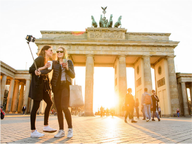

Sehenswürdigkeiten

© dpa
Top-Sehenswürdigkeiten in Berlin
Die Highlights unter den Sehenswürdigkeiten: Diese Attraktionen müssen Berlin mehr
Berlin.de
Barrierefrei
Suche
Menü
Bild: Mistervlad/Shutterstock.com
Die Highlights unter den Sehenswürdigkeiten: Diese Attraktionen müssen Berlin mehr
Die wichtigsten Sehenswürdigkeiten Berlins sortiert nach Thema, wie Architektur, Parks, NS-Zeit und Gedenkstätten. mehr
Berlins Sehenswürdigkeiten, Schlösser und Denkmäler mit Adresse, Informationen, Fotos und Verkehrsverbindung. mehr
 © dpa
© dpa
Die Highlights unter den Sehenswürdigkeiten: Diese Attraktionen müssen Berlin mehr
Dampferfahrten
Stadtführungen
Stadtrundfahrten
Fahrradtouren
Alle Touren
Nahverkehr
Flughafen
Bahnhöfe
Stadtplan
Infos A-Z
Highlights
Gedenkstätten
Regierungsbauten
Schlösser und Burgen
Alle Sehenswürdigkeiten
Für Abenteurer
Für Foodies
Für Romantiker
Berlin mit den Eltern
Alle Insidertipps